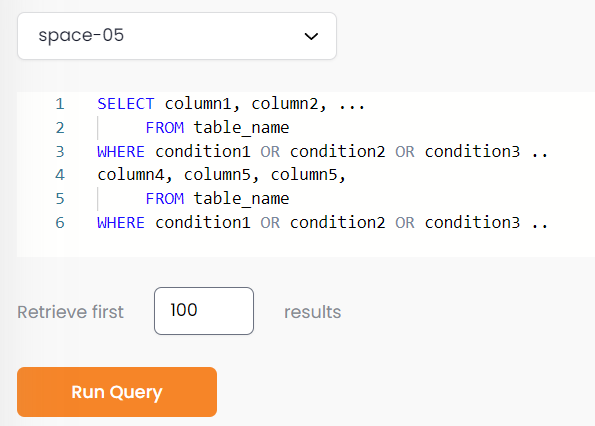

This part of the system allows you to execute a SQL query against the data in the Space.
Initially, fill in the data query parameters, as shown below.

(Space dropdown list) – choose which GigaSpaces Space object is the target of the query.
(Body of the query) – enter a SQL-99 compliant query.
Retrieve first – limit the query response to the desired number of rows. A maximum of 10,000 rows can be retrieved.
Click Run Query to execute the query. The query results will appear as shown below.
When viewing the query resultts, two additional options are available:
Export – export the query result to a csv-format file
Deploy – xxxxxxxxxxxxxxxxxxxxxxx